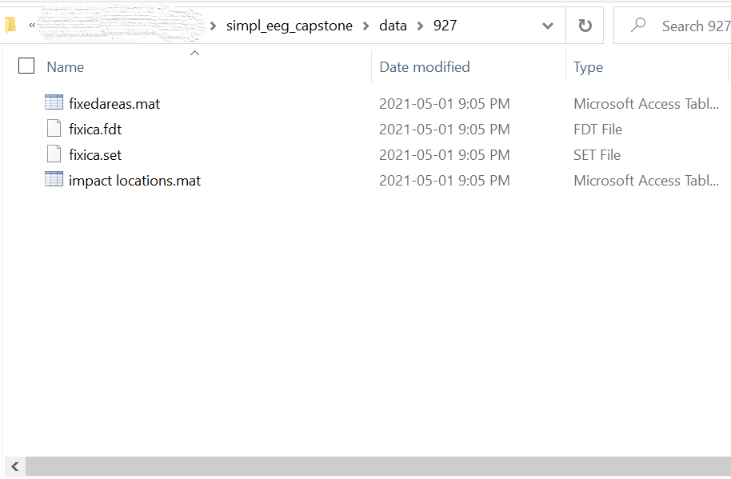

Package Introduction¶
Background¶
Electroencephalograms (EEG) is an electrophysiological measurement method used to examine the electrical activity of the brain and represent it as location-based channels of waves and frequencies. EEG benefits from being inexpensive and unobtrusive, leading to its widespread use in diagnosing brain disorders such as epilepsy and brain damage from head injuries. EEG data is recorded with high dimensionality, so the use of visualizations and metrics is essential for the data to be easily interpreted by humans. Currently, the options for visualizing EEG data require the use of complicated packages or software and the functionally is often limited.
simpl_eeg package is developed by students from the Master of Data Science program of University of British Columbia to provide the ability to conveniently produce advanced visualizations and metrics for specified time ranges of EEG data.
Instructions¶
Data Folder Structure¶
Note
To have data properly loaded to functions in this package, please make sure that the data file is saved in the data folder. All files related to the same experiment should be included as a subfolder under the data folder. Inside each experiment folder, there should be fixedareas.mat file, fixica.fdt file, fixica.set file and impact locations.mat file. For example: data files for experiment 927 should be > data > 927. Please refer to the screenshot below for setting up the data folder.

Import¶
There are six modules in this package. Each of them contains functions for different visualizations. The eeg_objects module contains functions to convert the raw data into epoched data with specified time ranges.
from simpl_eeg import (
eeg_objects,
raw_voltage,
connectivity,
topomap_2d,
topomap_3d_brain,
topomap_3d_head
)
Note
Please include the line below in your IDE if your IDE uses iPython so that the changes would be simultaneously reflected when you make a change to the python scripts. However, please note that it only works for IDE that uses iPython.
%load_ext autoreload
%autoreload 2